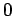
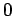

Inhalt Index DeskTop Bronstein

 Geometrie Vektoralgebra und analytische Geometrie Analytische Geometrie der Ebene Ebene Koordinatensysteme und deren Transformationen
Geometrie Vektoralgebra und analytische Geometrie Analytische Geometrie der Ebene Ebene Koordinatensysteme und deren Transformationen


Die Polarkoordinaten eines Punktes P bestehen aus dem Radius  , d.h. dem Abstand des Punktes von einem gegebenen Nullpunkt, dem Pol , und dem Polarwinkel
, d.h. dem Abstand des Punktes von einem gegebenen Nullpunkt, dem Pol , und dem Polarwinkel  , d.h. dem Winkel zwischen der Geraden 0P und einem gegebenen, durch den Pol hindurchgehenden orientierten Strahl, der Polarachse.
, d.h. dem Winkel zwischen der Geraden 0P und einem gegebenen, durch den Pol hindurchgehenden orientierten Strahl, der Polarachse.
Der Nullpunkt kann auch Koordinatenursprung genannt werden. Der Polarwinkel ist positiv, wenn er im entgegengesetzten Drehsinn des Uhrzeigers von der Polarachse aus gemessen wird; im entgegengesetzten Falle ist er negativ.